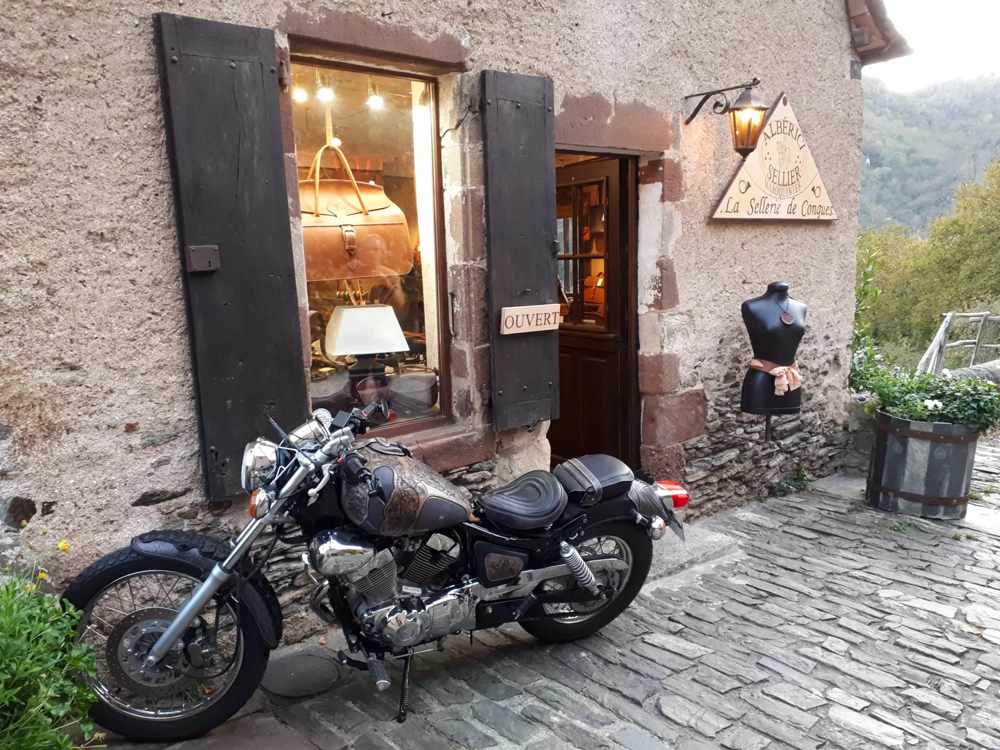
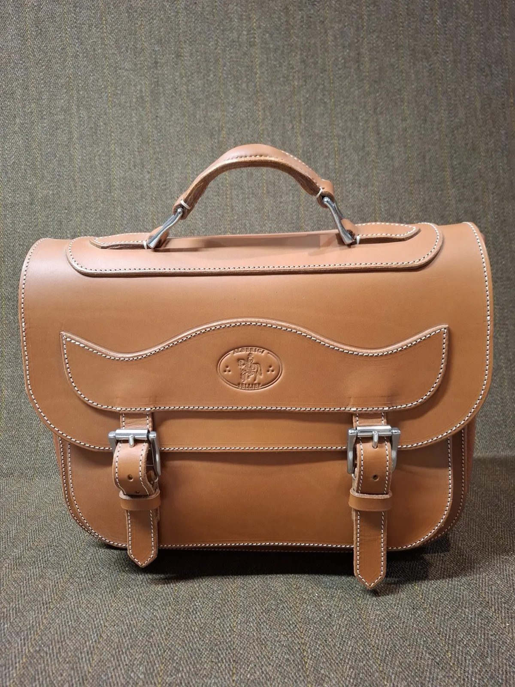
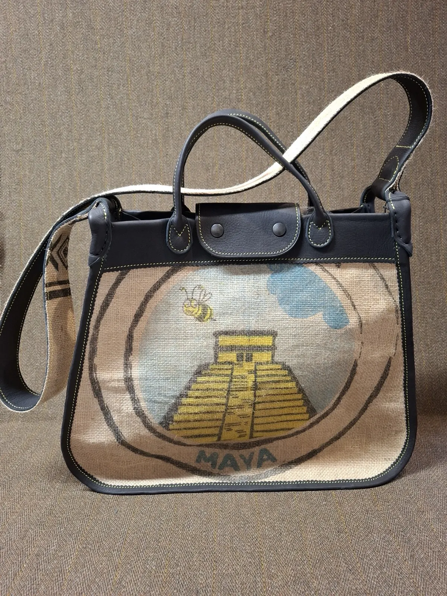
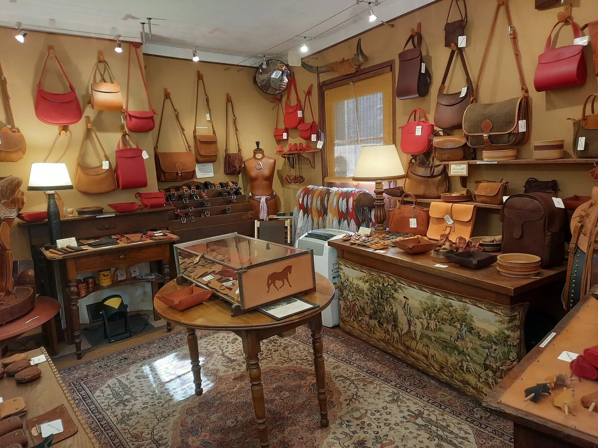
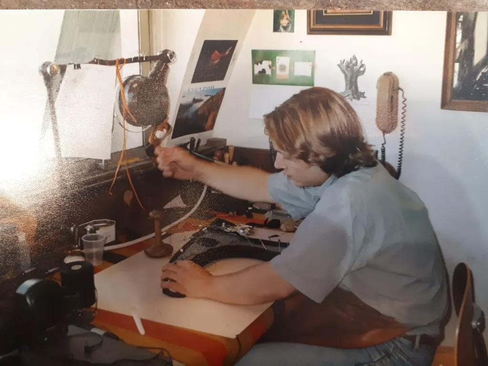
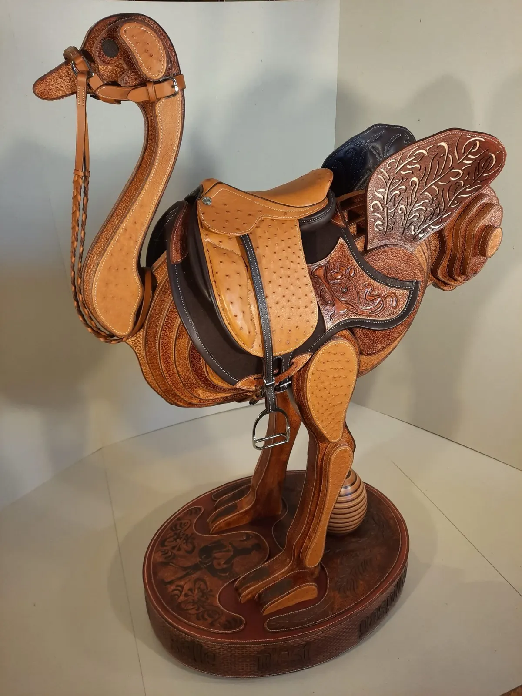
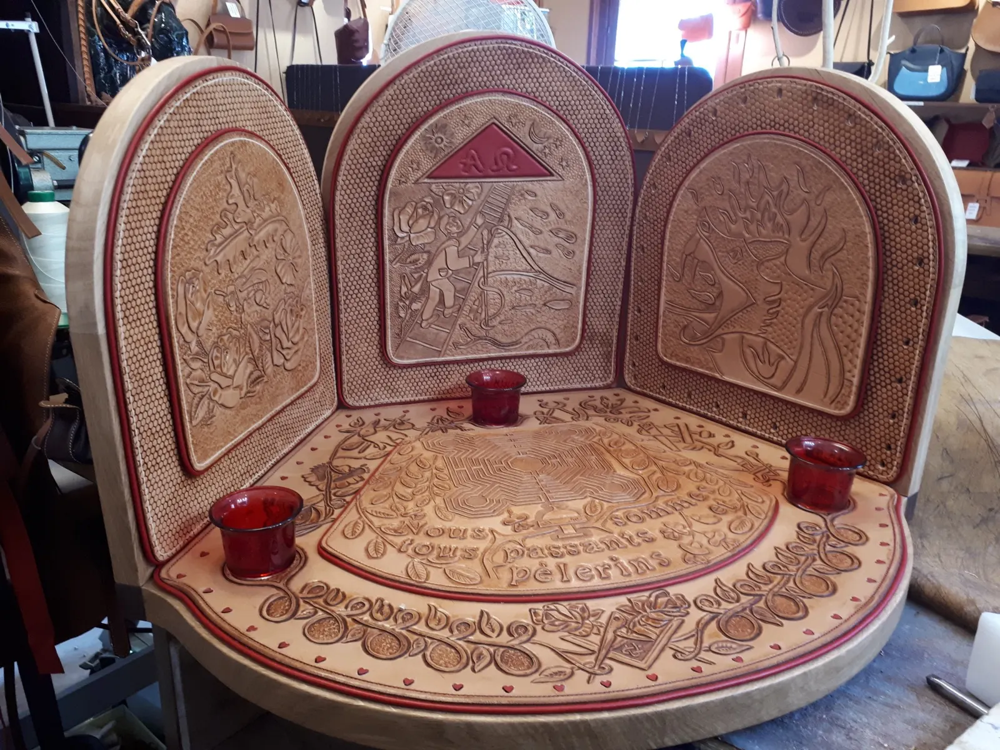
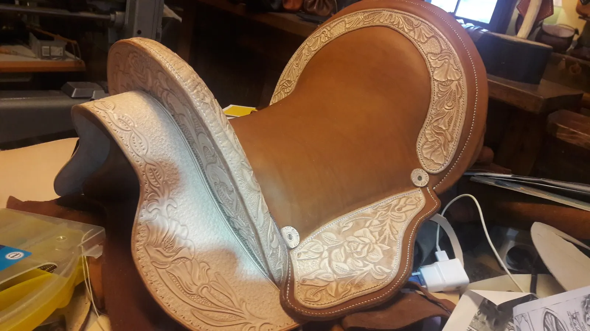
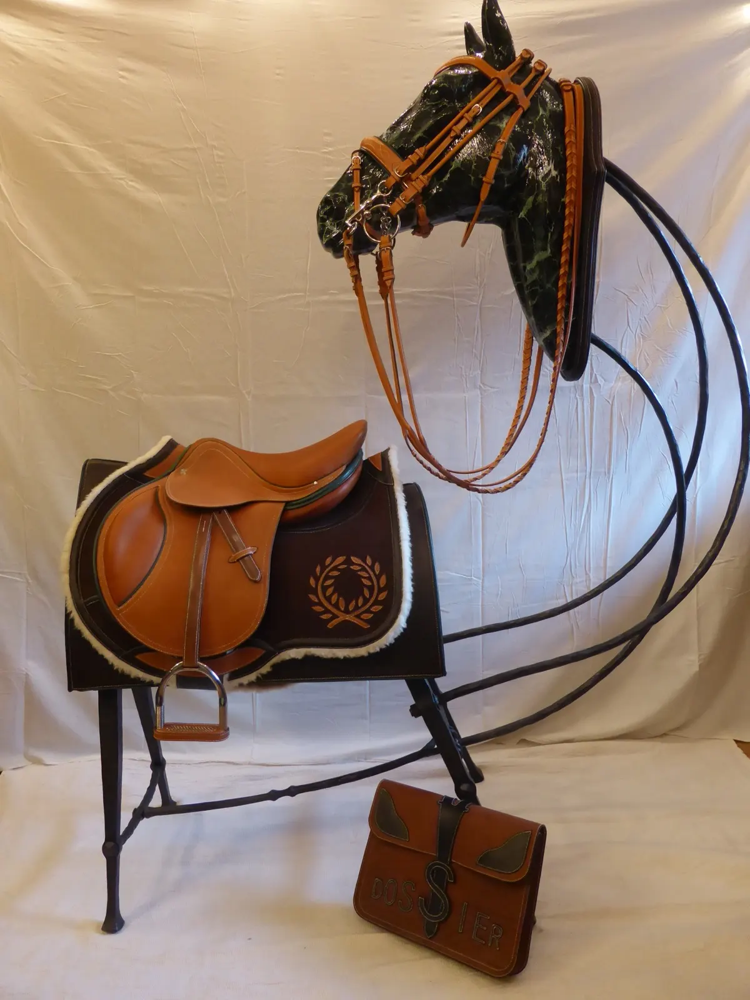
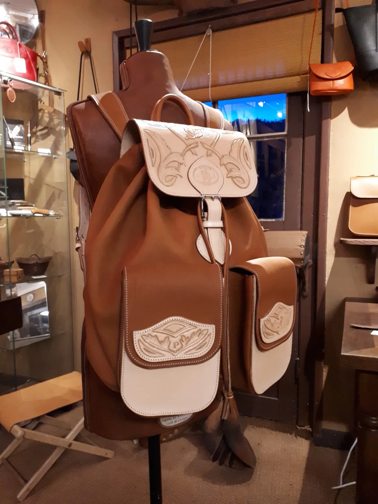

Conques-en-Rouergue, sur le chemin de Saint-Jacques
Pèlerin d'un jour ou de toujours, poussez la porte.
Ici à Conques, mon atelier est une halte. J'y travaille le cuir comme l'on marche : avec patience, respect et humilité. Sur le chemin, chaque pas a son histoire, et dans ma boutique, chaque article a la sienne.
Fixe de l'atelier : 05 65 74 49 64

- Depuis 2010dans la rue principale de Conques
- Tous les joursde l'année, à l'atelier-boutique
- Hermès, Parisplusieurs années à l'Atelier de Sellerie
- Moins de 50 kmentre la tannerie et l'atelier
- Compagnondu tour de France des Devoirs Unis

Cartable, cuir gold
Dans la boutique
Chaque objet est dessiné, coupé, préparé, cousu et bichonné dans l'atelier-boutique, avec les mêmes cuirs que ceux des selles. Les articles se font essentiellement en gold, café, noir et rouge.
- Cabas « Moka »290 €Pièce unique. Grand cabas léger et très robuste, en cuir et sac de café en toile de jute doublée. 38 × 44 × 14 cm.
- Cartable950 €Cuir de jeune bovin pleine fleur, trois compartiments. Tout ce qui fait sa solidité est cousu main : les boucles, la poignée.
- Ceinture « l'Élégante »110 €
- Ceinturon90 €
- Ceinture « Traditionnelle »80 €
- Ceinture « L'Andalouse »65 €
- Ceinture « l'Essentielle »50 €
- Baume multi-cuirs10 €
65 articles en boutique en ligne, avec paiement sécurisé.
Un cuir qui grandit en beauté
Ces cuirs portent les marques naturelles de la vie animale. Leurs rides et leurs ombrages sont les témoins d'une matière vivante. Ils sont tous « pleine fleur », et une belle patine sera leur récompense.

Cuir respectueux
Des cuirs tannés à moins de 50 km, à la Tannerie Arnal, en Aveyron depuis 1880. Elle valorise des peaux issues de l'industrie agro-alimentaire qui seraient autrement perdues.
Production locale
Chaque article est fabriqué sur place, à l'atelier, loin de la sous-traitance et du travail en série.
Savoir-faire
L'Esprit et la Main façonnés par plusieurs années à l'Atelier de Sellerie Hermès à Paris : un souci de perfection, d'authenticité et de tradition.
Lin Albérici, sellier-harnacheur
Selles anglaises, briderie, sacs façon sellier : autant d'objets exécutés au quotidien, dans le respect des engagements pris le jour où il a été reçu Compagnon.

- Bac littérairePuis la décision de devenir sellier, un projet nourri depuis longtemps.
- CAP de sellerie et de maroquinerieLes deux diplômes du métier.
- Voyage initiatiqueDes expériences dans différentes entreprises pour consolider le métier.
- Atelier de Sellerie HermèsPlusieurs années de travail à Paris.
- 2005Chef-d'œuvre de compagnonReçu Compagnon du tour de France des Devoirs Unis.
- 2010L'atelier de ConquesDans la rue principale, sur la Via Podiensis.
« Mon métier est le maillon essentiel qui relie tous les autres : l'équitation, la course à pied dans la nature, travailler de mes mains, et ce lieu de pèlerinage hautement spirituel qu'est Conques. »
Lin Albérici
Ouvrages d'exception
Des pièces entièrement cousues main, de la pièce de compagnon à la selle du concours.




Le sur-mesure
Vous avez une idée, une envie particulière ? Tout est possible.
Le travail sur mesure fait partie du quotidien de l'atelier. Toute commande spéciale peut être étudiée.
- Sacs
- Maroquinerie
- Selles anglaises
- Briderie
- Collier et laisse pour chien

Venir à l'atelier
Sur la Via Podiensis, au fond d'un cirque, le village médiéval de Conques s'est construit autour de l'abbatiale Sainte-Foy, classée au patrimoine mondial de l'UNESCO. L'atelier-boutique est dans la rue principale, près de la poste, et vous accueille tous les jours de l'année.
- Atelier-boutique
- 15 rue Gonzague Florens
12320 Conques-en-Rouergue - Mobile
- 06 84 35 82 27
- Fixe
- 05 65 74 49 64